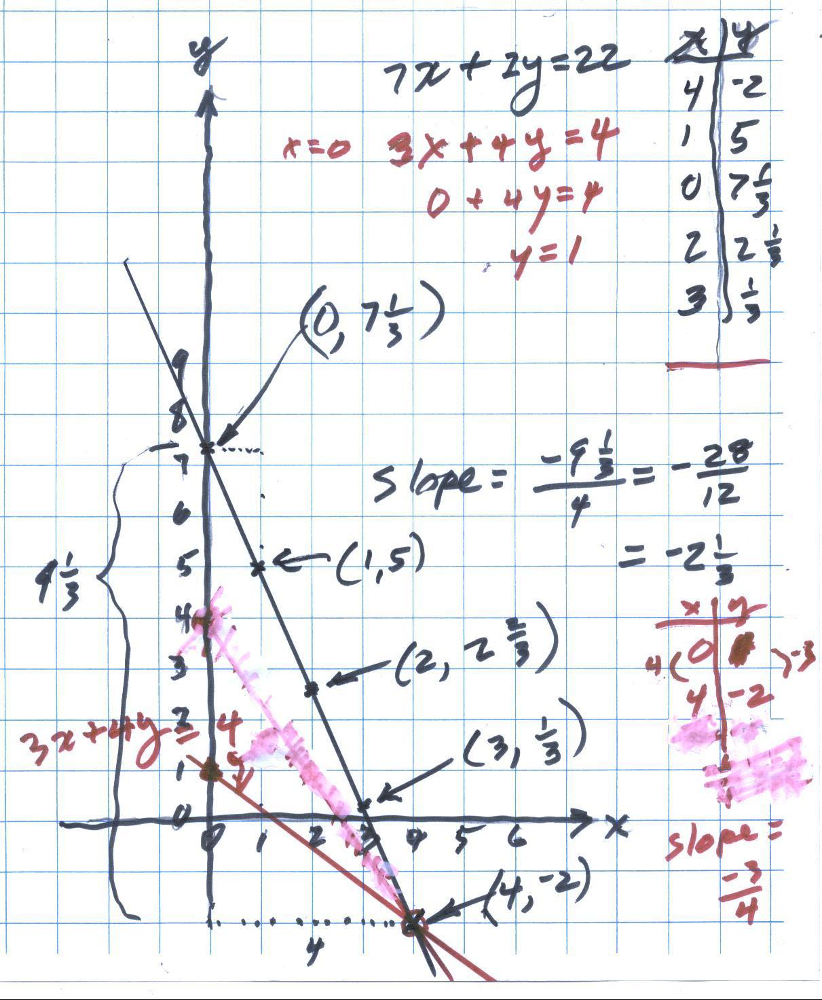
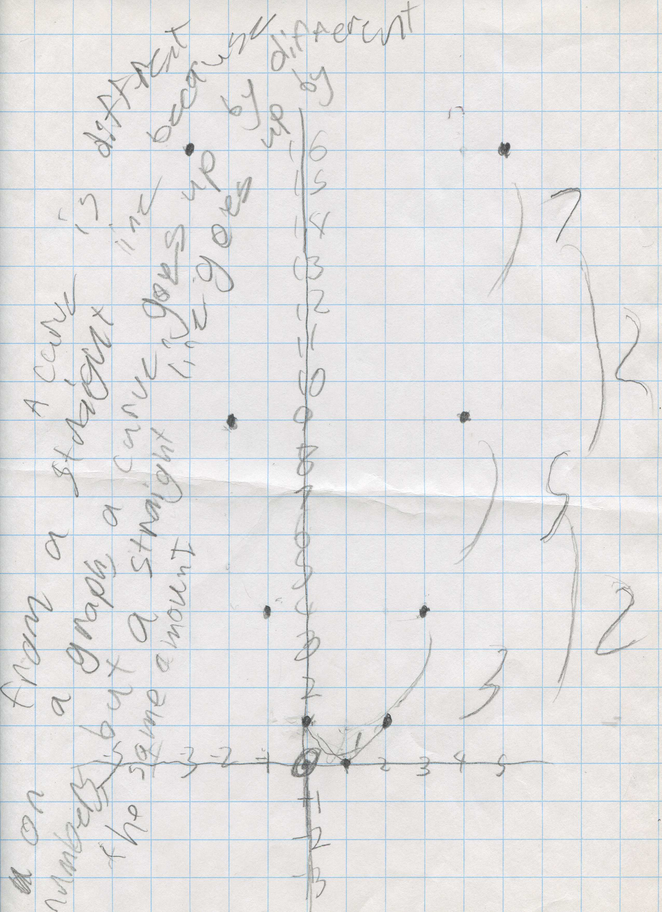

Slope of straight lines & curves-> The Derivative/Chapters 6 & 14
Emily finds the slope of 2 straight lines, 7x+2y=22 and 3x+4y=4

Notice that both slopes are negative because each graph is like this \. For 7x+2y=22 she found the slope from (0, 7 1/3) to (4,-2) = rise/run= the change in y = -(7 1/3 - -2) /change in x= (4-0) = -9 1/3/ 4 = -2 1/3. For the line 3x+4y=4 the y goes down 3 when the x goes up 4, so the slope is -3/4.
Anna made up a rule x2 - 2x +1 and graphed it. She saw the differences.

She wrote: a curve is different from a straight line because on a graph a curve goes up by different numbers (1, 3, 5, 7,..- the slope changes) but a straight line goes up (or down) by the same amount. As in Emily's graph, for the black line, the y goes down by the same amount - 2 1/3 as x goes up 1).
When Anna came in this week she and Don talked about the slope of a line. When they finished, she wrote "the change in y /change in x = the slope"! Don asked Anna if she could think of a way to find the slope of her curve (the slope of the tangent) at the point (3,4). We'll see what she comes up with- Don hopes Mom doesn't give too much away.
So how do we find the slope of a curve? By finding the slope of the tangent line to the curve at any point on the curve- this is called the derivative OR by zooming in on a curve at some point, when the curve looks like a straight line, then find the slope of the line at that point.